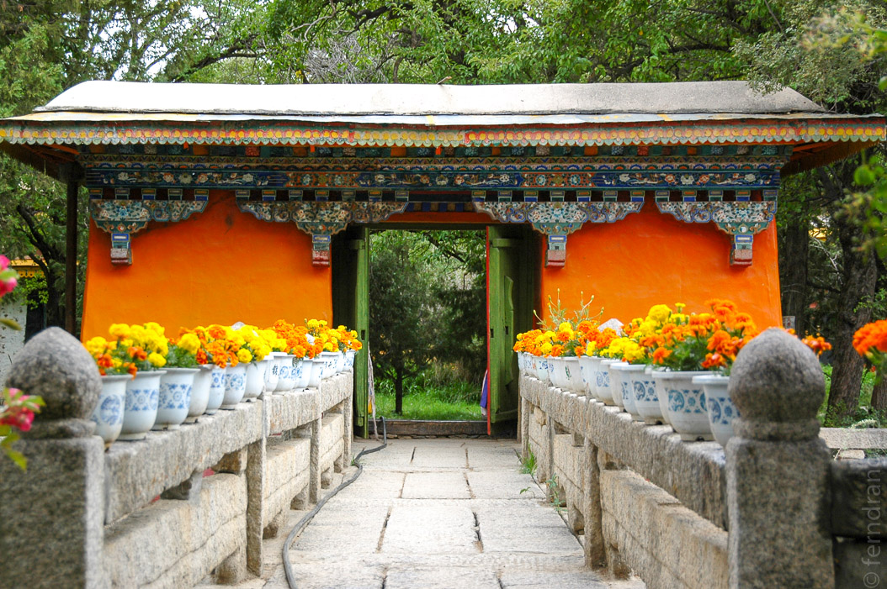
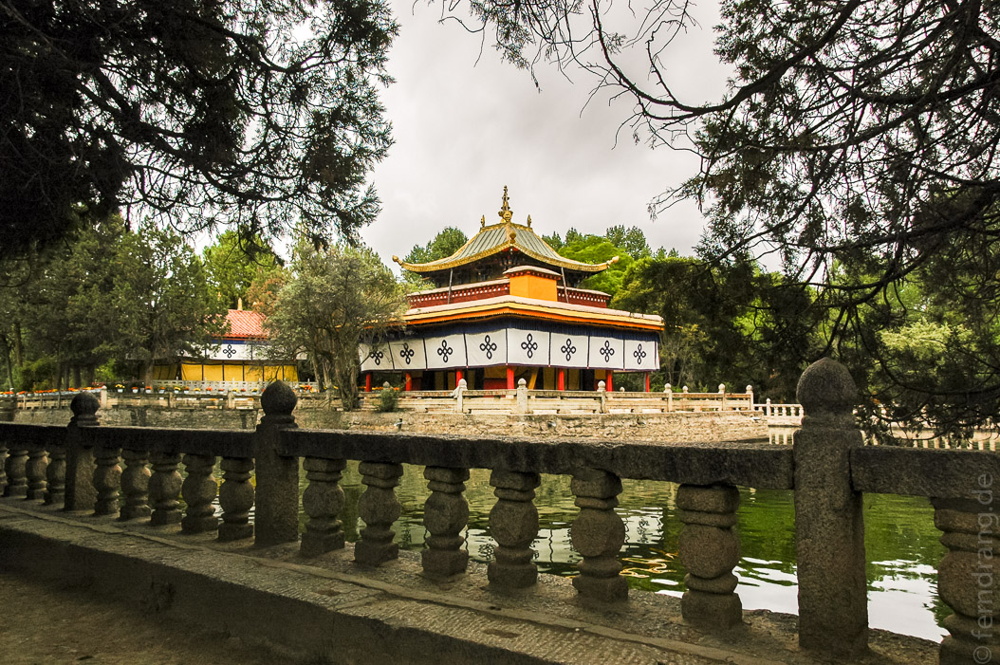
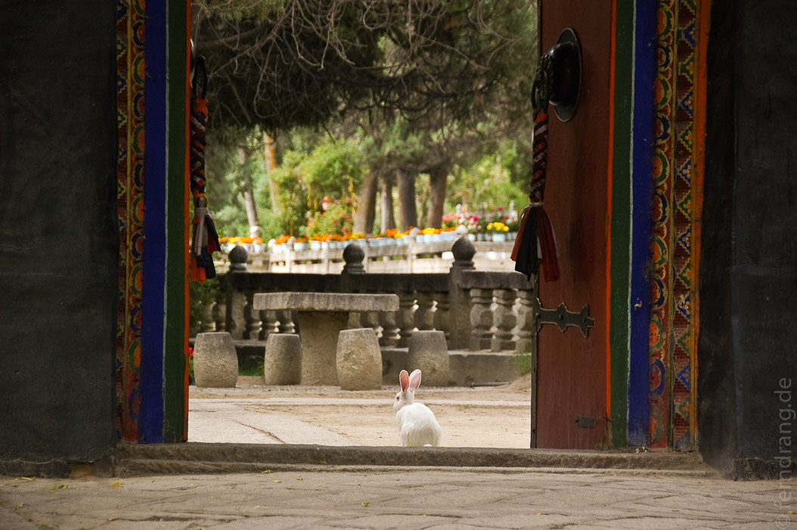
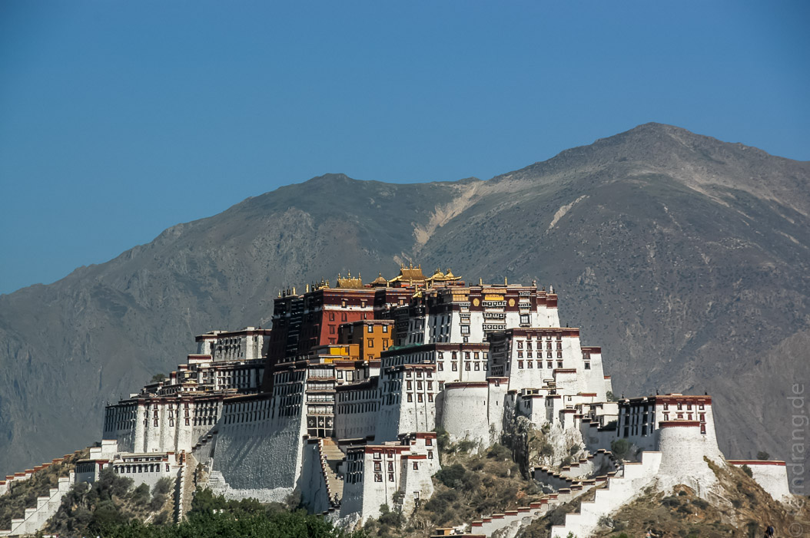
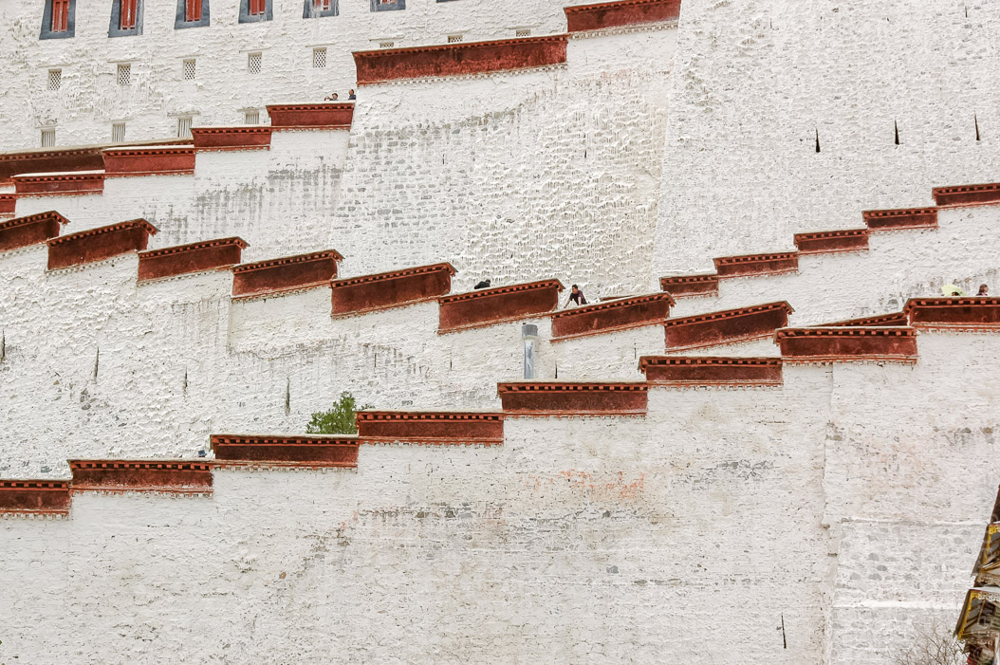
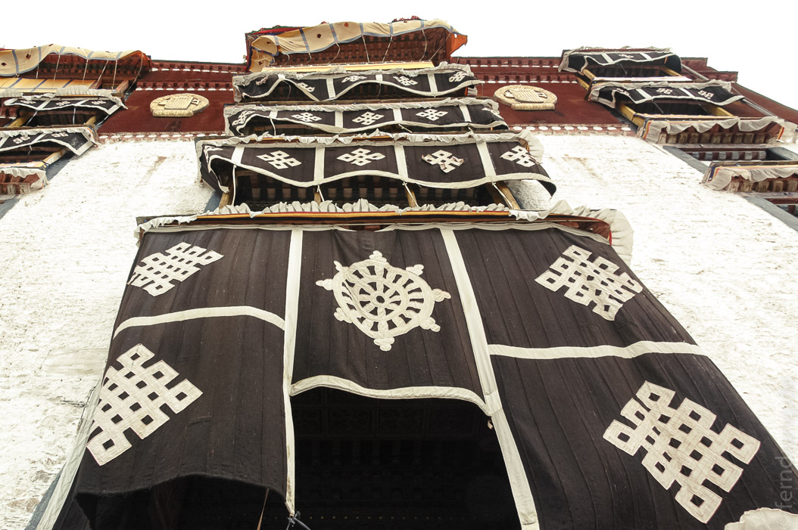
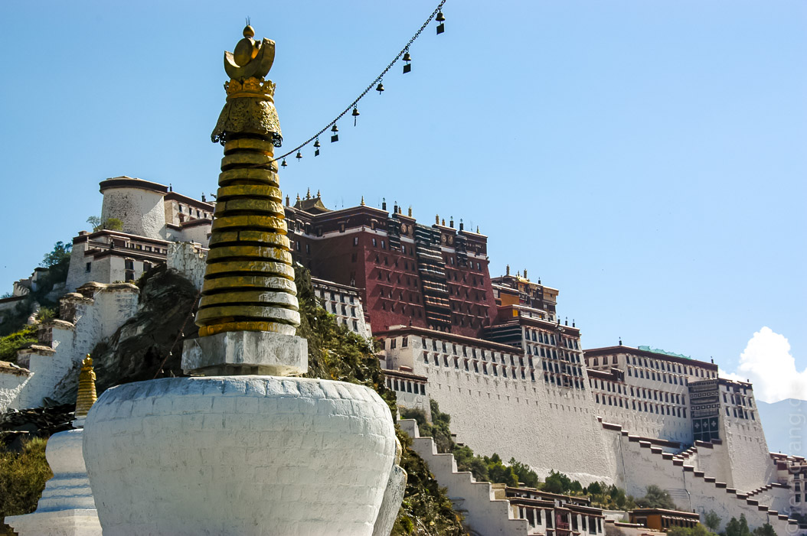

Den Morgen haben wir mit einer Besichtigung der Sommerresidenz des Dalai Lama begonnen. Norbulinka, der Juwelengarten, einst vor den Toren der Stadt errichtet, liegt mittlerweile innerhalb von Lhasa. In einer schönen Parkanlage befinden sich die Residenzen, die sich einige der Dalai Lamas erbaut haben. Da ein Teil des Gartens von Chinesen zu profaneren Zwecken missbraucht werden, konnten wir nur die des achten und des 14. besichtigen.
Das Haus des aktuellen Dalai Lamas ist eines der größten Bauwerke im Garten. Neben vielen Kammern mit Schreinen und Heiligenfiguren, gibt es einen geschäftlichen Teil, in dem politische Delegationen empfangen wurden. Ein Besuchszimmer für seine Mutter und eine 50er-Jahre-Toilette runden diesen weltlichen Teil ab.
Im sakraleren Teil befindet sich ein gewaltiger Thron. Wie auch die Klöster, so sind auch diese Räume vollständig verziehrt und bemalt. Eine Wand zeigt den tibetischen Entstehungsmythos - vermutlich die Kurzfassung. Der Thronraum enthält Bilder aller Dalai Lamas, so auch das einzige Abbild des aktuellen, das man in Tibet finden kann.
Unser Führer hat uns die Geschichte der Belagerung und des Beschusses des Gartens durch die Chinesen im Jahr 1959 sehr lebendig schildern können. Sein Vater, ein Mönch des Sera-Klosters, war damals wie viele tausend andere auch dort, um den Dalai Lama zu beschützen. Wie so viele tibetische Kultstätten, wurde auch Norbulinka erst zerstört und dann wieder aufgebaut. Jetzt hüpfen weiße Hasen durch die Beete, die weiterhin hingebungsvoll gepflegt werden, da dem Dalai Lama eine Liebe zu Blumen nachgesagt wird.
Nachmittags haben wir den Potala-Palast, die Winterresidenz, besichtigt. Der Besuch des wirklich prachtvollen Gebäudes wurde durch die Umstände leider stark beschattet: Um dem hauptsächlich chinesischen Besucherandrang Herr zu werden, werden Gruppen zusammengelegt, um Führer zu sparen, was wirklich unsinnig ist. Darüber hinaus bekommt man beim Eingang wieder einen Zeitstempel; nach einer Stunde muss man wieder draußen sein. Das führt dazu, dass sich die Chinesen wie human waves durch den Palast schieben, so dass man kaum anhalten kann. Man wird von rückwärts gehenden Führern überrannt, bekommt Fähnchen ins Gesicht und von lautstarken chinesischen Vorträgen einen Gehörsturz.
 Das ist gerade bei diesem fantastischen Palast besonders ärgerlich. Denn hier enthält jeder Raum maßlose Schätze. Neben unendlichen Reihen von Buddhas, Lamas und anderen verehrungswürdigen Statuen sticht vor allem das Grabmal des fünften Dalai Lamas hervor. Die gigantische Stupa ist unermesslich reich geschmückt. Als Erbauer dieses Palasts hat er es sich wohl verdient. Interessant ist der Umstand, dass die hohen Mönche seinen Tod 15 Jahre lang geheimgehalten haben, um dem arbeitenden Volk nicht die Lust am Palastbau zu nehmen. Währenddessen wurde ein ähnlich aussehender Mönch für offizielle Anlässe verwendet.
 